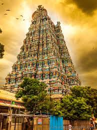

| Home | About | Domestic Tour | International Tour | Contact | |

Ladakh is a region administered by India as a union territory and constitutes an eastern portion of the larger Kashmir region that has been the subject of a dispute between India and Pakistan since 1947 and India and China since 1959.
Ladakh is bordered by the Tibet Autonomous Region to the east, the Indian state of Himachal Pradesh to the south, both the Indian-administered union territory of Jammu and Kashmir and the Pakistan-administered Gilgit-Baltistan to the west, and the southwest corner of Xinjiang across the Karakoram Pass in the far north. It extends from the Siachen Glacier in the Karakoram range to the north to the main Great Himalayas to the south.
The eastern end, consisting of the uninhabited Aksai Chin plains, is claimed by the Indian Government as part of Ladakh, and has been under Chinese control since 1962.
The largest town in Ladakh is Leh, followed by Kargil, each of which headquarters a district.The Leh district contains the Indus, Shyok and Nubra river valleys. The Kargil district contains the Suru, Dras and Zanskar river valleys.

Located on the south-eastern coast of the Indian peninsula, Tamil Nadu is defined by the lush Western Ghats and the semi-arid Deccan Plateau in the west, the discontinuous Eastern Ghats in the north, the fertile Eastern Coastal Plains lining the Bay of Bengal in the east, the Gulf of Mannar and the Palk Strait to the south-east, the Laccadive Sea at the southern cape of the peninsula—Kanyakumari, and the river Kaveri bisecting the state.
Politically, Tamil Nadu is bound by the Indian states of Kerala, Karnataka, and Andhra Pradesh, and the union territory of Puducherry, as well as an international maritime border with the Northern Province of Sri Lanka at Pamban Island.
The tourism industry of Tamil Nadu is the largest in India, with an annual growth rate of 16 per cent. Tourism in Tamil Nadu is promoted by Tamil Nadu Tourism Development Corporation (TTDC), a government of Tamil Nadu undertaking.
According to Ministry of Tourism statistics, 4.68 million foreign (20.1% share of the country) and 333.5 million domestic tourists (23.3% share of the country) visited the state in 2015 making it the most visited state in India both domestic and foreign tourists.

Kerala, a state on India's tropical Malabar Coast, has nearly 600km of Arabian Sea shoreline.
It's known for its palm-lined beaches and backwaters, a network of canals.
Inland are the Western Ghats, mountains whose slopes support tea, coffee and spice plantations as well as wildlife.
National parks like Eravikulam and Periyar, plus Wayanad and other sanctuaries, are home to elephants, langur monkeys and tigers.
|
Copyright 2023.All Rights Reserved. |